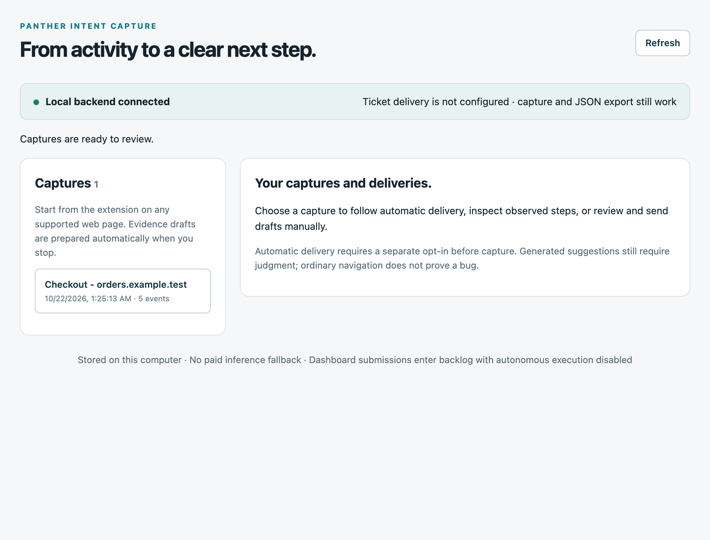
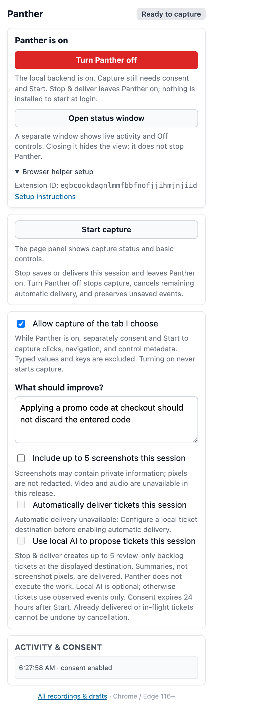
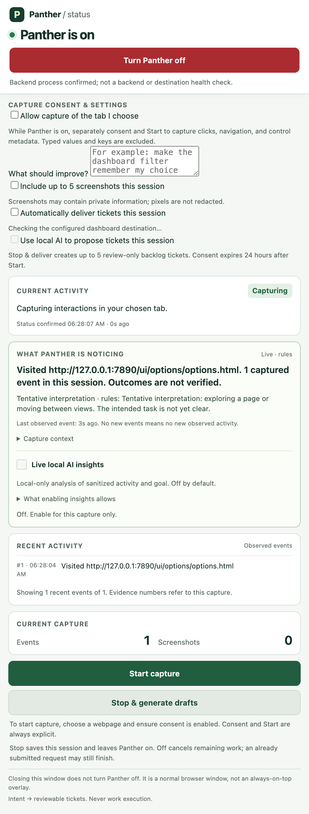
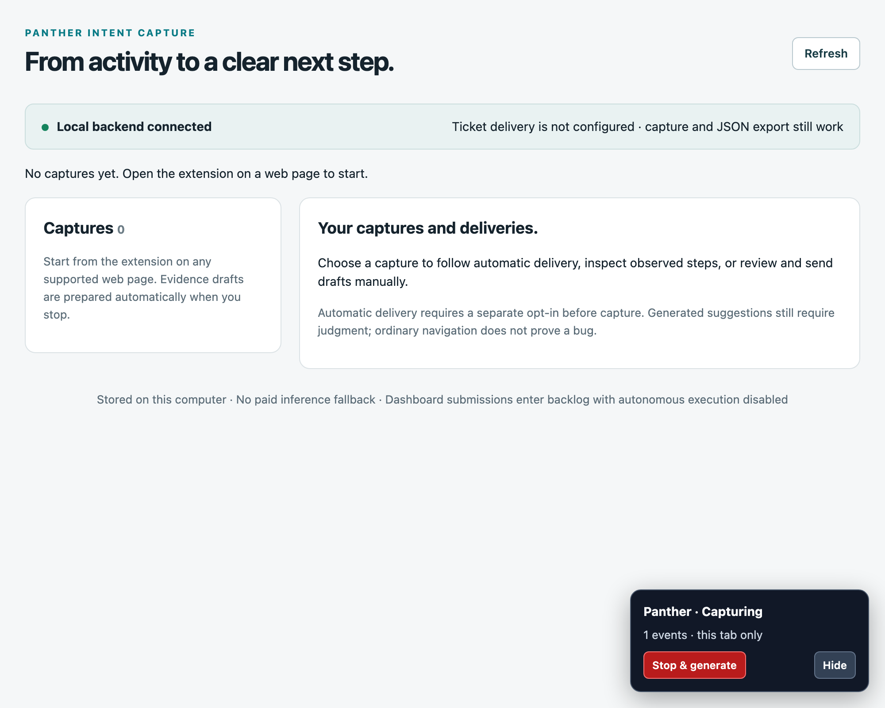
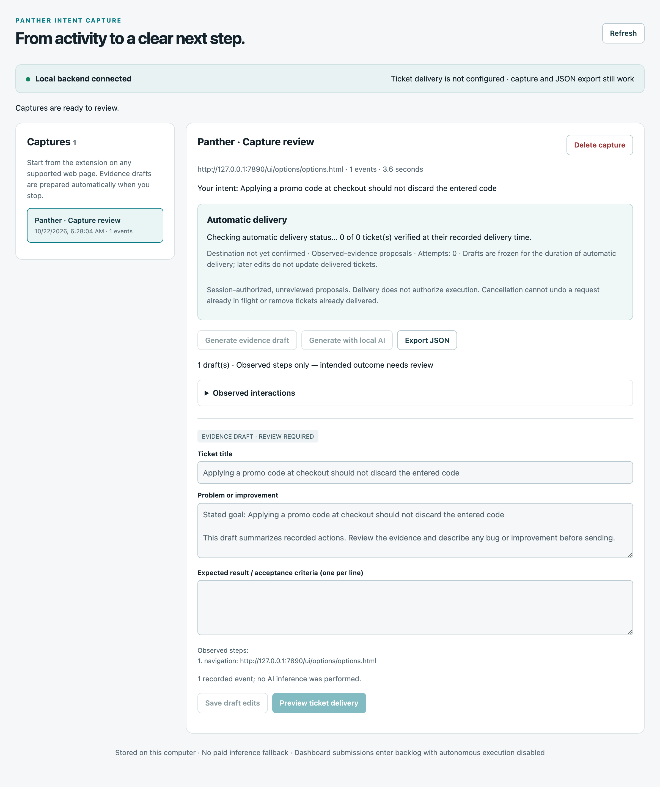
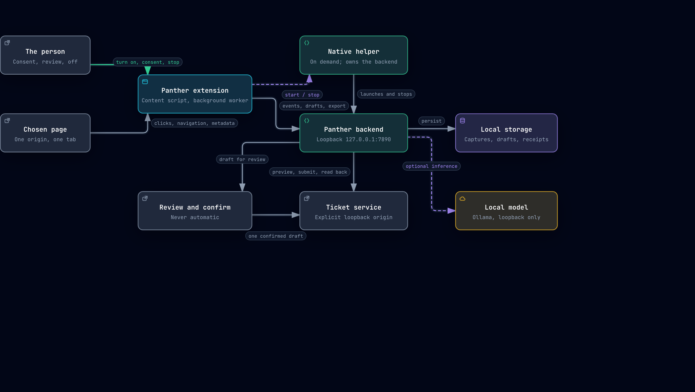

Capture starts off.
You start from the extension popup and choose the tab. Typed values, typed keys and full page text are excluded.
Local-first browser intent capture
Panther records the interactions you choose to capture, keeps the evidence on your computer, and turns intent into tickets. Configure a compatible local ticket service and opt into automatic delivery for a session to save, generate, deliver and verify without a separate click for each ticket.

03 / The screens
These are the real extension and the real backend, driven by the scripts in this repository against a synthetic capture. Nothing here is mocked or illustrated.




04 / The parts
The extension talks to a loopback backend over native messaging. The backend stores the evidence, optionally asks your local model for a draft, and only then talks to a destination you configured.

01 / What it does
You start from the extension popup and choose the tab. Typed values, typed keys and full page text are excluded.
Uncaught exceptions, unhandled rejections, HTTP errors and failed subresources land in the same timeline as your interactions.
Stopping prepares a draft from the observed actions and your stated goal. It does not infer that a bug exists.
Preview the exact ticket, confirm one draft at a time, and read the ticket back independently before showing a verified delivery.
05 / Privacy
The extension talks to a local backend, and the backend talks to a local model. No cloud fallback, no paid inference fallback.
It never turns Panther on or starts capture by itself. Off stays reachable during capture, generation, delivery and status waits.
A page controls its own error stream, so a reported failure is never a verified defect, a reproduction, or permission to act.
Screenshot pixels are not redacted. Inspect them before sharing anything.